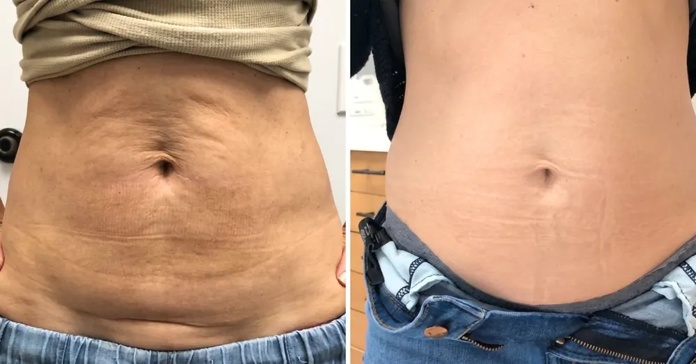

The Brazilian Modelador For Cellulite & Stretch Marks
Bumbum’s guaraná modelador is an at-home Brazilian ritual built to soften the orange-peel look of cellulite, fade the look of stretch marks, and firm crepey, loose skin — reaching the deep layer a $12,000 BBL only fakes surgically. No needles. No downtime. Just 60 seconds a day.
Available online only · While supplies last · Free shipping & 180-day money-back guarantee


“I’d had cellulite since my 30s and figured it was permanent. Eight weeks of the 60-second ritual and it’s the smoothest my skin has looked in years.”

Concentrated guaraná (caffeine) is massaged into the deep layer where the dimpling actually lives.

The modelador works the middle layer — where firmness is lost — for a lifted, sculpted look.

Cupuaçu butter deeply hydrates and softens the look of stretch marks and loose, crepey skin.

Amazonian açaí helps defend skin from the daily breakdown that leaves a bottom looking flat.
less skin indentation in 8 weeks in a 2025 peer-reviewed study of a topical caffeine cream-gel (the active concentrated in guaraná). Illustrates the ingredient class, not Bumbum itself. Individual results vary.


The cellulite that hid your gym progress. The stretch marks the babies left on your hips and thighs. The crepey, loose skin fast weight loss left behind. It isn’t vanity to want smooth skin back — and it isn’t too late.
If you’ve spent hundreds on squat challenges, drugstore “firming” lotions, and $200 spa massages that did nothing — you need to hear this.
That’s the whole job of the guaraná modelador — the concentrated caffeine ritual Brazilian women have used for 30+ years. The 60-second upward massage drives the actives into that deep layer instead of leaving them on top like a lotion. It does topically what a $12,000 BBL fakes surgically.


— A concentrated caffeine active only works if it reaches the deep layer. That’s why the 60-second upward massage matters as much as the cream: it drives the guaraná past the surface, where a lotion stops.

The hero. Brazilian guaraná, concentrated for roughly twice the caffeine of coffee — studied for firmer-looking skin and less-visible cellulite.

A Brazilian super-butter that supports hydration, elasticity and barrier repair — softening the look of crepey, loose skin.

One of the densest antioxidant sources on earth — it helps defend the enzymes that break down firm skin.
Most US “firming creams” stop at one weak active. Bumbum stacks the full Brazilian modelador blend — the whole reason it reaches the layer they can’t.
These statements refer to individual ingredients (the caffeine/guaraná class, cupuaçu, açaí), not this finished product. Individual results vary.

Every order is backed by our 180-day money-back guarantee. All transactions are secure and encrypted.
Get Up To 64% Off →🚚 Ships in 24h from the USA · small-batch — may sell out

“By week three my jeans fit different. By week eight the dimpling kept fading — that’s the part that still surprises me. I almost didn’t order because I’d been burned so many times.”

“I was two weeks from a BBL consult — $12,000 and weeks face-down. Tried this first. Cancelled the consult and kept my money. My husband noticed before I said a word.”

“Two kids left the skin back there crepey and loose. Six weeks in, it’s firmer and smoother than it’s been in years. I stopped wrapping the sarong at the pool.”

| Drugstore firming lotion | Spa cellulite massage | Laser / BBL | Bumbum | |
|---|---|---|---|---|
| Reaches the deep (septae) layer | ✗ | Briefly | Surgically | Daily |
| Softens cellulite & stretch marks | ✗ | ✗ | Some | Both |
| No needles, no downtime | ✓ | ✓ | ✗ | ✓ |
| Typical cost | ~$120/jar | $200+/visit | $8k–$15k | from $25/jar |
| 180-day money-back | ✗ | ✗ | ✗ | ✓ |
“Ordered on a whim after my sister raved. Three weeks and the dimpling on my thighs is genuinely softer.”
“The stretch marks from my pregnancies are finally fading. Sixty seconds after my shower and that’s it.”
“I was about to book a $9k procedure. Tried this first and cancelled the consult. My husband noticed before I told him.”
“I’ve wasted so much money on creams. This is the first one that actually did something you can see.”
A small amount to your bottom and thighs after your shower.
Upward, in circular motions, for about 60 seconds until absorbed.
Once a day. No gym, no diet, no surgery required.
See it in action — the 60-second ritual, and a real customer:
The curve only bends upward around week 6 — which is exactly why most women order 2–3 jars and finish the full cycle instead of stopping right as their skin starts to turn.

Try Bumbum for a full 180 days. If your bottom isn’t visibly firmer — for any reason — email us and get every penny back, even on an opened jar. Most women never send it back.
Questions? support@itsbrazilianusa.com
We’ll say it plainly: the only real risk is doing nothing and staying exactly where you are six months from now. The risk of trying sits entirely with us.
Most “firming” lotions are watered-down moisturizer that sits on the surface. Bumbum is the concentrated guaraná modelador class, and the 60-second upward massage drives the actives into the deep layer where firmness is actually lost — not off the top.
Most women feel tighter, smoother skin within 7–14 days. Visible softening of dimpling usually shows around weeks 3–6, and the full window is 60–90 days of daily use.
About 4 weeks with daily use on the bottom and thighs. Most women choose the 2 or 3-jar kit to finish the full 60–90 day cycle without running out mid-transformation.
It’s a topical cosmetic — guaraná, cupuaçu butter and açaí, cruelty-free and dermatologist-tested. Most report only a light guaraná warmth. Patch-test first if your skin is sensitive, and discontinue if irritation occurs.
Yes. Women use the same 60-second ritual anywhere skin looks soft, dimpled or crepey — thighs, tummy, upper arms. Same cream, same technique.
You pay nothing. Every order is covered by a 180-day money-back guarantee — even on an opened jar. Email us and get a complete refund. No questions.
The current discount is available while supplies last. Bumbum is small-batch and blended in the USA; when this batch sells out, restocking takes weeks, and the discount may not return.

“I’d given up. Three weeks in, firmer than it’s been in a decade. I’m in beach photos with my grandkids again.”

“At 58 I was researching a BBL — $12,000 and weeks of recovery. This gave me a firmer, lifted look in a few weeks instead.”

“Dropped 30 lbs on a GLP-1 and the skin went loose. Six weeks of Bumbum and it looks tightened instead of deflated.”

“Four years since I wore a swimsuit without a wrap. Six weeks and the texture is basically gone. My husband noticed first.”

“I’d resigned myself to ‘this is just my age.’ Ten weeks later I’m in shorts for the first time since my 40s.”

“The crepey skin after my second baby is what wore me down. This is the first thing that actually tightened it back.”

You won’t find Bumbum on a shelf next to the $120 designer jars — it ships direct from the brand, which is how a real guaraná modelador drops to as little as $25 a jar. For context: a BBL runs $8,000–$15,000 with weeks of recovery.


🔒 Secure checkout · 🚚 Free US shipping · ✅ 180-day money-back guarantee — keep the jar
One-time purchase · no subscription · free US shipping · 180-day money-back guarantee
Advertisement. This is a paid advertisement, not a news article, blog, or consumer-protection update. Bumbum is a cosmetic product for the appearance of skin firmness. It is not a drug and is not intended to diagnose, treat, cure or prevent any disease, and is not a substitute for surgery or any medical treatment. It is not affiliated with, endorsed by, or a replacement for any surgical or injection brand. Any research referenced evaluates the individual ingredients (the caffeine/guaraná class, cupuaçu, açaí), not this finished product, and has not been independently verified here. Statements regarding the product have not been evaluated by the FDA. Individual results vary and are not guaranteed. Testimonials and before/after images reflect voluntary individual reports and do not represent typical results; some names and images shown are illustrative representations used to protect customer privacy. Consult a professional for any skin concern.
Clinical research: 1) Cosmetics (MDPI), 2025, 12(4):155 — topical caffeine cream-gel for cellulite (56 participants, 8 weeks). 2) Pharmaceutics (MDPI), 2026, 18(2):151 — randomized double-blind caffeine cream, 12 weeks. 3) Industrial Crops & Products — açaí (Euterpe oleracea) collagenase/elastase inhibition.